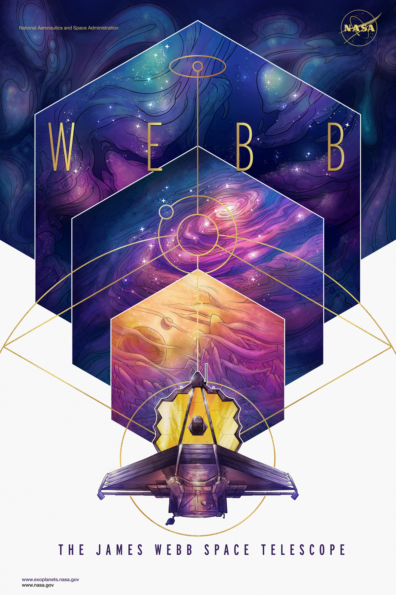
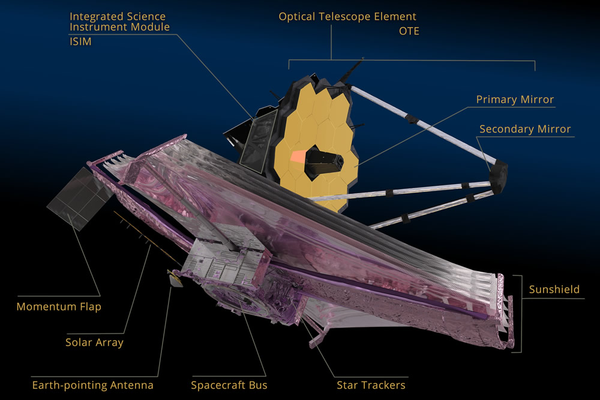
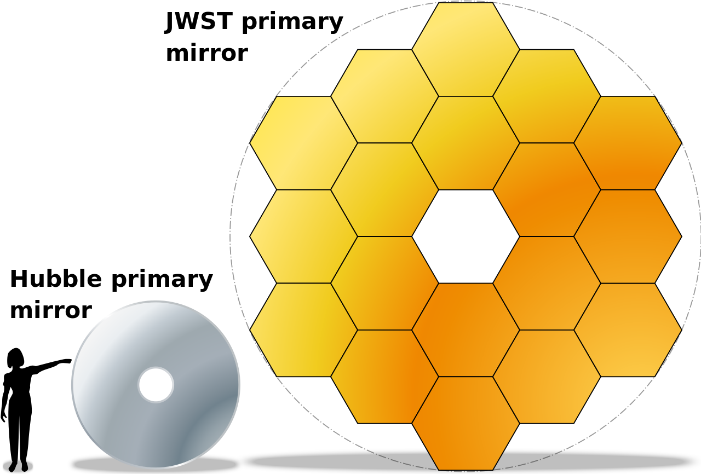

JAMES WEBB SPACE TELESCOPE (JWST)
| HOME |
Hello, from cosmolabs!!! A place where you explore your self!!
ABOUT

Figure 1: JWST Poster by NASA
James Webb Space Telescope (JWST), is a gigantic space telescope developed by National Aeronautical Space Administration (NASA) in partnership with European Space Agency (ESA) and Canadian Space Agency (CSA). It is named after James E. Webb, who was the administrator of NASA from 1961 to 1968 and played an integral role in the Apollo space program.
The work on this telescope started back in 1996 with a launch planned in 2007 and a US$500 million budget, but the project had numerous delays, cost overruns and major redesigns. The cost spent on this project till date is around US$10 billion. Finally it set to blast into space by using an Ariane 5 launch vehicle from Kourou in French Guiana on December 24, 2021, around 7:20 am EST.
WHAT IT CONSISTS OF?
The Webb telescope has a mirror over 20 feet across, a tennis-court sized sun shade to block solar radiation, four separate cameras and sensor systems to collect the data and weighs around 14,000 pounds, which is about as much as a full sized school bus.
On a technical detail the telescope consists of
- Optical Telescope Element (OTE) that includes mirrors and back-plane.
- Integrated Science Instrument Module (ISIM) that includes cameras and sensors.
- Sun shield to block solar radiation.
- Earth pointing antenna, that sends data back to earth.
- Solar array, that converts sunlight into electricity.
- Star trackers.

Figure 2: JWST - Breakdown of Elements!!!
Read jwst - content/observatory for more details and watch the video on YouTube JWST Briefings: Science Instruments
HOW AND WHERE IT WORKS?
It works kind of like a satellite dish. The light from a star or galaxy will enter the mouth of the telescope and bounce off the giant hexagonal mirror towards the four sensors at the center. The wavelength of the light it collects ranges from 0.6 - 28.5 microns. To see the faint galaxies in infrared light the temperature must be maintained under 50 K (-223 C - 233 C) otherwise it ends up seeing its own IR radiation. This is where the sun shield comes into picture and keeps the heat of the Sun, Earth and spacecraft bus electronics away.
The telescope will be positioned at one of the Lagrange Points where the gravitational pull of Sun and Earth precisely equals to the centripetal force required to move with lesser fuel consumption. This position is also daunting as it is about 1 million miles from earth (around 4 times the distance between earth and moon) which doesn’t allow frequent repairs by an astronaut like some other telescopes (e.g. Hubble Telescope). The mission is expected to last between 5 and 10 years and starts working after 6 month commissioning phase.

Figure 3: JWST - Position WRT Earth!!!
One of the best videos from YouTube on How Does The James Webb Space Telescope Work?
WHY IS THE HYPE?
To look at distant city lights you need more than good set of eyes, to comprehend our vast universe the cosmos, it requires instruments capable of expanding our senses beyond our evolutionary limits, JWST is one of those. It can answer some ambitious questions astronomers are struggling from centuries by taking us back in time nearer to big bang and granting the glimpses of sights long hypothesized but never before seen, from the birth of galaxies to light from the very first stars. It will be one of the most complex telescopes launched into the space and one of most powerful telescope ever built. By the time you read this article you might have already heard about JWST unboxing space mysteries. :)
Watch on YouTube: JWST - Science Goals

Figure 4: JWST and Hubble Space Telescope Mirrors comparison!!!